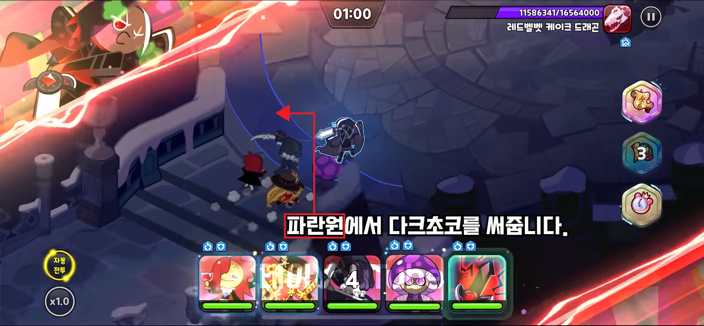
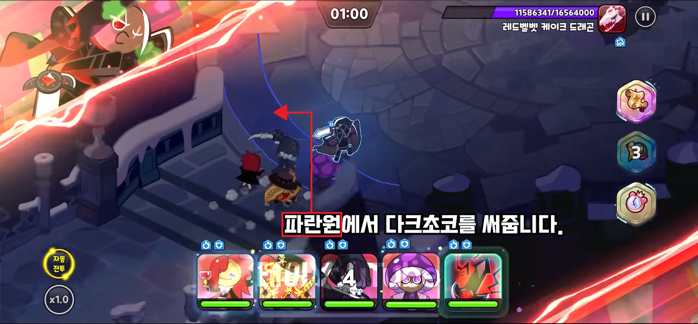

[ 덱 종류 ]
닼블탐퓨뱀
진행 순서
(감초가 없기 때문에 스킬로 할퀴기를 피해야 함)
※각 딜러쿠키들의 부옵션에 쿨감 좀 챙겨주면 안정적으로 들어간다.
※퓨바는 쿠키들이 반피 이하거나 메테오 막을때 쓰자
주의점 / 단점
감초가 없기 때문에 딜러 쿠키들의 스킬로 기절을 피해야 하거나 오롯이 기절을 당해야한다
따라서 난의도는 어려운 편이며 컨트롤에 따라 딜편차가 심하다.
따라서 난의도는 어려운 편이며 컨트롤에 따라 딜편차가 심하다.
닼독감퓨뱀
진행 순서
(7시인걸 보고 누르는게 아닌 누를 때 7시 여야 함)
※감초를 쓰는 이유는 할퀴기 시 앞에 쫄이 대신 맞아줘서 스턴 + 대미지가 안들어온다.
※일찍 쓰는 이유는 쿨타임을 미리 돌려서 2번째 패턴도 방어하기 위함 ※메테오 떨어지기 전에 감초 방어력증가 안쓰는 이유는 반사딜 사고를 방지하기 위함
주의점 / 단점
반사딜로 인한 감초 돌연사만 조심하자
닼감독호뱀
진행 순서
※자동전투로 진행합니다.
시작하자마자 감초 눌러서 스킬 예약
파란원에서 다크초코 사용
독버섯 새총 1시, 호밀 새총 5시, 뱀파 새총7시 스킬 사용
감초 스킬쿨 돌자마자 사용
※이후 다크초코 스킬에 소환수가 에어본 떠야함

주의점 / 단점
미세한 토핑의 차이나 기기차이 등으로 다크초코 2타에 에어본이 안들어가면 뱀파2타가 안들어간다.
다크초코 2타에 에어본이 안되는 경우에는 본인의 기기에 맞는 세팅을 찾거나 손컨으로 쫄몹공격을 한번 빼줘야 한다.
다크초코 2타에 에어본이 안되는 경우에는 본인의 기기에 맞는 세팅을 찾거나 손컨으로 쫄몹공격을 한번 빼줘야 한다.
위에서 사용한 쿠키 토핑
- 감초맛 쿠키의 토핑
- 쿨타임 19.4% + 쿨타임 5% (세트 효과)
- 피해감소 10.7%
- 다크초코 쿠키의 토핑
- 피해감소 26.6% + 피해감소 5% (세트 효과)
- 독버섯맛 쿠키의 토핑
- 공격력 47.5% + 공격력 5% (세트 효과)
- 쿨타임 8.4%
- 뱀파이어맛 쿠키의 토핑
- 공격력 55.9% + 공격력 5% (세트 효과)
- 피해감소 10.4%
- 호밀맛 쿠키의 토핑
- 공격력 58% + 공격력 5% (세트 효과)
- 피해감소 7.6%
- 쿨타임 3.5%